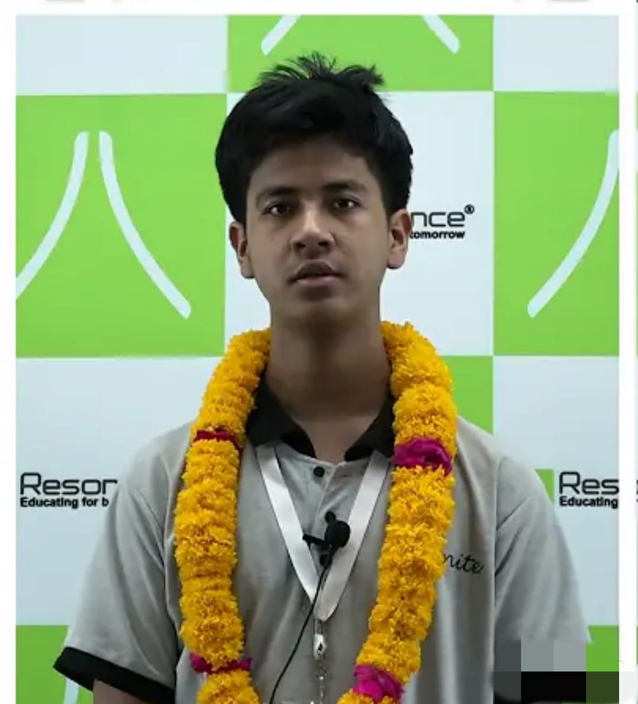

Upamanyu Jit Phukan
Proffessional web developer seeking employment in your esteemed company to leverage my learnings, expand my knowledge and be mentored towards a succesful career.

Education
- Acknowledged with the degree of Bachelor of Technology in Computer Science and Engineering from National Institute of Technology (NIT) Silchar, in 2027.
- Started school at Delhi Public School Guwahati.
- Was mentored in Resonance Kota for JEE and CBSE exams.
Academic Results
- 98.87 percentile in JEE Main (1st attempt)
- Qualified for JEE Advanced
- 92 % in XII CBSE Boards
- NTSE Stage 1 qualified
Skills
- Skilled in programming in C and C++.
- Highly proficient in front end web development.
- Knowledged in machine learning.